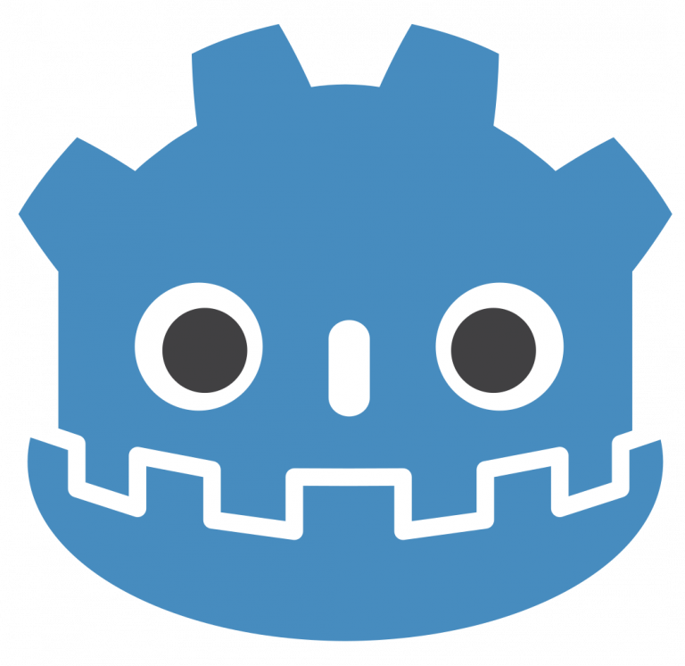
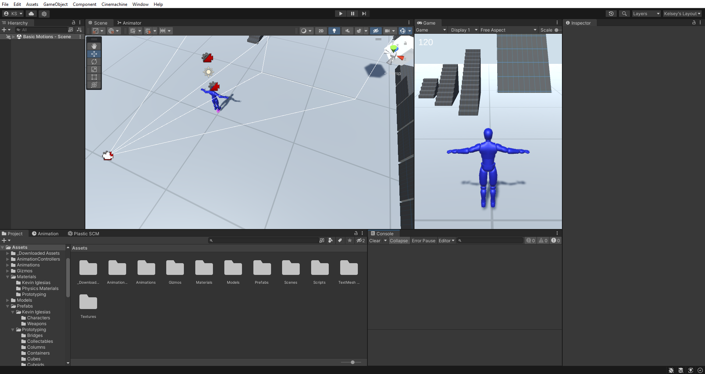
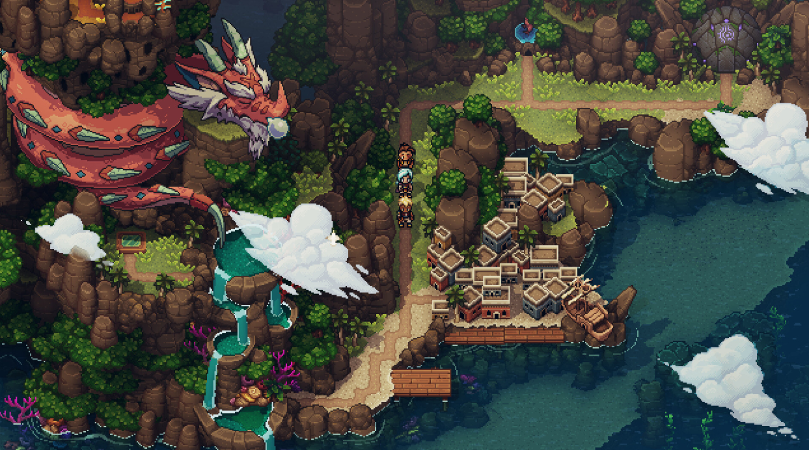

A Year of Indie Game Dev
Whats happened over the last year?
It's been a heck of a time, Godot 4.0 was release and Unity tried to destroy everything.
A lot has happened over the last year, there has been minor developments and major developments. Things have come a long way, but with that there where also set backs. In terms of good news, Godot launched its 4.0 version and gained a bunch of new users, but I gained those new users for a not so great reason. Another game engine, Unity made retroactive changes to their user agreement that would have made it impossible for some game studios to keep their doors open.
Dispite the challenges that showed up, there have still been many sucessful indie game launches over the last year. Names such as Moonstone Island, Dave the Diver, and Sea of Stars probably sound familiar to you by now. Some more detail about those and others will be further down.
The Future is Looking Bright For Godot

By Assets: Juan Linietsky, Fernando Miguel Calabró (2018)
Code: Juan Linietsky, Godot Engine contributors (2018-2021),
CC BY 3.0,
Link
It took three years of development, but the highly anticipated Godot 4.0 update released March 1st 2023. A highlight feature for this release is the new Vulkan renderer, with it comes better lighting and higher quality shadows. The new Vulkan renderer is for higher grade hardware systems, while and OpenGL solution was developed for low end and mobile devices. In 4.0 the OpenGL renderer had great 2D support and limited 3D support, but plan to add further support in later updates.

For years Godot has been on an upward trend, but with the release of 4.0 and recent events at Unity they've had two spikes in popularity. More and more people are starting to hear about the Open Source engine and with user trust faiding in corporations, people are seeing Godot as their next best option and in some cases their only option moving forward.

Sourced from Google Trends
Link
Section Sources
- Juan Linietsky, December 21, 2022 GodotEngine.org
- 2000+ Godot contributors, March 1, 2023 GodotEngine.org
- GDQuest, March 1, 2023 Godot 4.0: It's Almost a Brand New Engine! Full Breakdown of New Features
It's Time To Talk About the Elephant in the Room

Sourced From my self
The once beloved game engine Unity flew just a little to close to the sun this year. In September 2023, unity anounced that there would be retroactive changes to their Runtime fee. The change that caused most of the problems was that developers would be charged 0.05 cents per install of their game after specified income threshholds where passed. In some cases this would mean developers had to give Unity all the income their game generated.
Since then, Unity has made modifications the the new Runtime fee that solve most of the issues people had with it. Still, many developers say they no longer have trust in the company and are calling for the CEO - John Riccitello to step down. On October 9th, 2023 many peoples pleas were met because John Riccitello stepped down as the CEO after nearly ten years. But for many developers this means nothing, Unity Technologies has already broken what trust they had and will likely never fully regain what was lost.
Section Sources
- Unity Technologies September 22, 2023 Unity.com
- wikipedia John Riccitiello
2023 Indie Hits
stuff here
Moonstone Island
A 2D topdown creature-collecting life-sim where the player explores an open world of 100 islands. Collect Spirits, make friends, brew potions, and compete you training as an Alchemist while testing your strength in card-based encounters.
The Moonstone island was released on PC in September 2023 and is planning for a switch version, but no dates has been confirmed as of 2023-11-08.
Sources
- “Moonstone Island on Steam.” Moonstone Island on Steam, Studio Supersoft and Raw Fury , 20 Sept. 2023, store.steampowered.com/app/1658150/Moonstone_Island/.
 Sourced From
Instant Gaming
Sourced From
Instant Gaming
Dave the Diver
A singleplayer adventure RPG where the player does deep-sea dive exploration by day and manages a sushi resaurant at night. There are over 100 different species of dish for the player to catch.
The Dave the Diver was released on PC in June 2023.
Sources
- Will Borger, ManowarElves. “All Fish - Dave the Diver Guide.” IGN, 26 Oct. 2023, www.ign.com/wikis/dave-the-diver/All_Fish.
- “Dave the Diver on Steam.” DAVE THE DIVER on Steam, MINTROCKET, 2023, store.steampowered.com/app/1868140/DAVE_THE_DIVER/.
 Sourced from
Steam
Sourced from
Steam
Sea of Stars
A turn-based RPG that tells the story of two Children of the Solstice who perform Exlipse Magic to stop the evil alchemist Fleshmancer - Steam. Sea of Stars was made by the same developers that gave us The Messenger in 2018, an action-platformer.
The Sea of Stars released on PC, PS4, PS5, Xbox One, Xbox Series X/S, and Switch Augest 2023.
Sources
- . “Sea of Stars on Steam.” Sea of Stars on Steam, Sabotage Studio, 28 Aug. 2023, store.steampowered.com/app/1244090/Sea_of_Stars/.
 Sourced From Steam